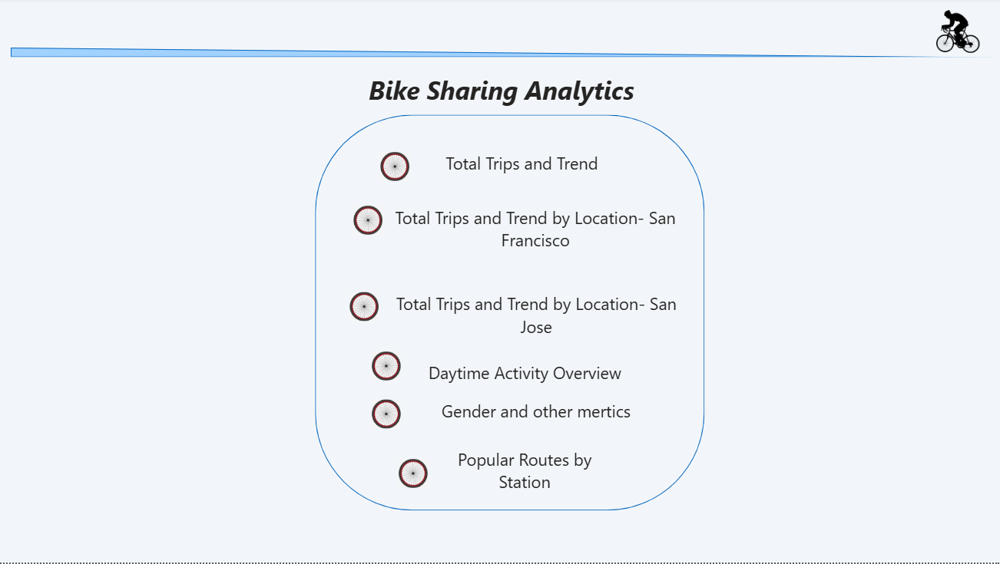
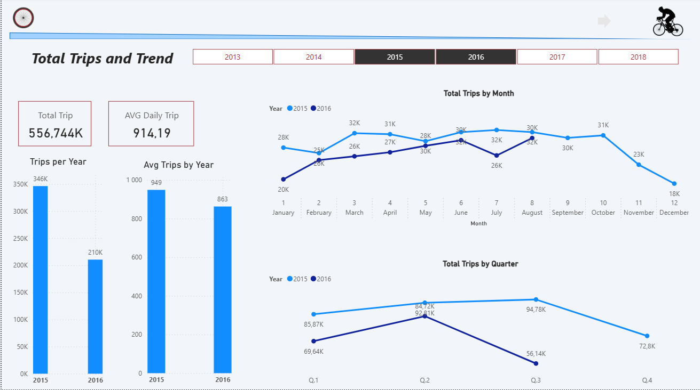
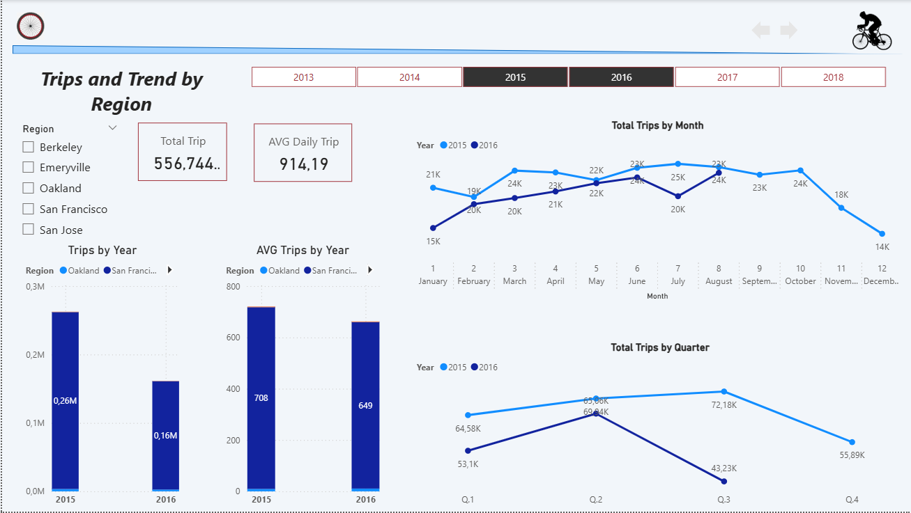
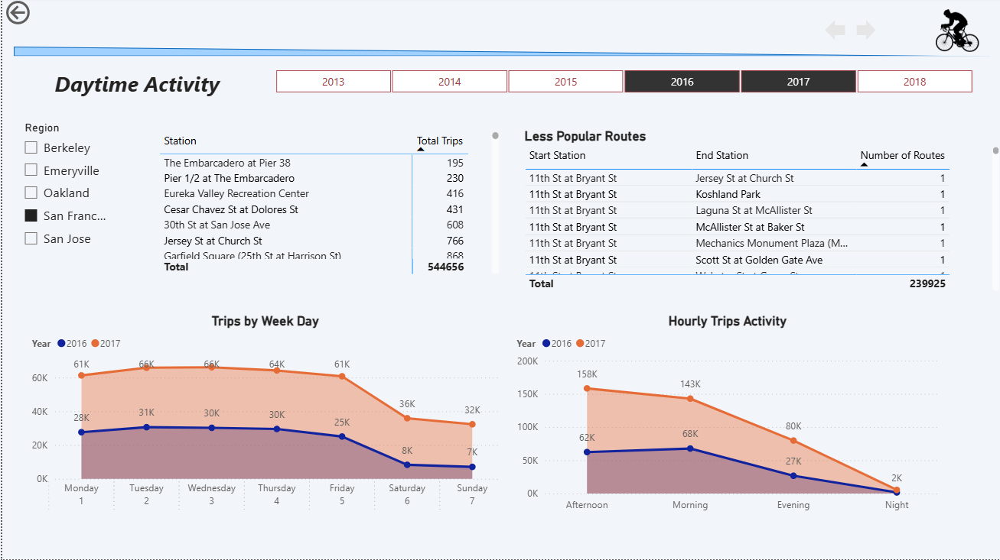
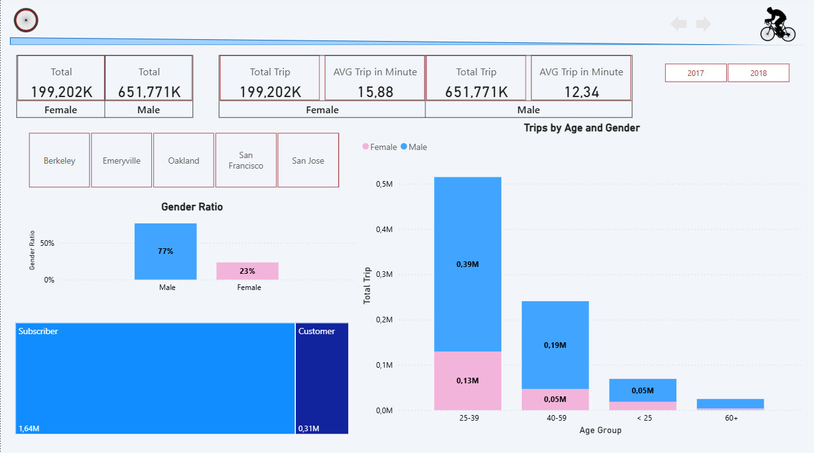
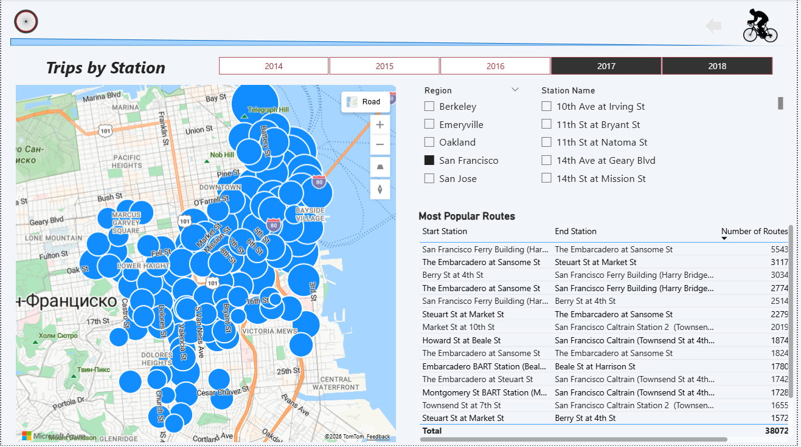

This project analyzes the San Francisco Bike Share dataset to uncover trends and patterns in bike usage. Key metrics include total trips and trends over time (yearly and monthly), trips by location (total and average daily trips by region), daytime activity (routes between locations, hourly and daily trip activity), user demographics such as gender ratio and subscriber activity, and a visual map highlighting the most popular stations in each region. These analyses provide insights into commuter behavior, peak usage times, and station popularity, supporting better planning and operational decisions.





